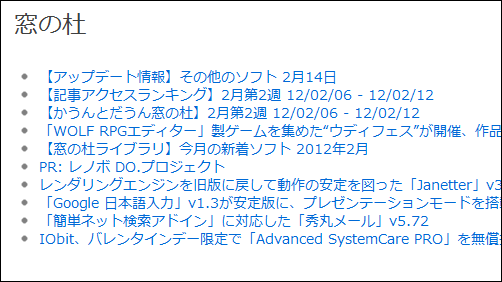

RSS を処理する
公開日：

今日の10分プログラミングは、RSSを取得してリストタグに変換しようの巻。
using System;
using System.Collections.Generic;
using System.Linq;
using System.Web;
using System.Web.Mvc;
using System.Xml;
using System.ServiceModel.Syndication;
namespace Daruyanagi
{
public static class FeedHelper
{
public static string GetHtml(string url, int count = 10)
{
var div = new TagBuilder("div");
div.Attributes.Add("class", "feed");
using (var reader = XmlReader.Create(url))
{
var feed = SyndicationFeed.Load(reader);
var h2 = new TagBuilder("h2");
h2.InnerHtml = feed.Title.Text;
div.InnerHtml += h2.ToString();
var ul = new TagBuilder("ul");
foreach (var i in feed.Items)
{
var a = new TagBuilder("a");
a.Attributes.Add("href", i.Links.Count > 0
? i.Links[0].Uri.ToString() : "");
a.Attributes.Add("title", i.Title.Text);
a.InnerHtml = i.Title.Text;
var li = new TagBuilder("li");
li.InnerHtml = a.ToString();
ul.InnerHtml += li.ToString();
if (--count < 1) break;
}
div.InnerHtml += ul.ToString();
}
return div.ToString();
}
}
}
RSS 2.0／ATOM 1.0フィードを処理するには？［3.5、C#、VB］ − ＠IT をそのままコピったようなものだけど。"http://rss.rssad.jp/rss/forest/rss.xml"を指定すれば、スクリーンショットのような出力になると思う。